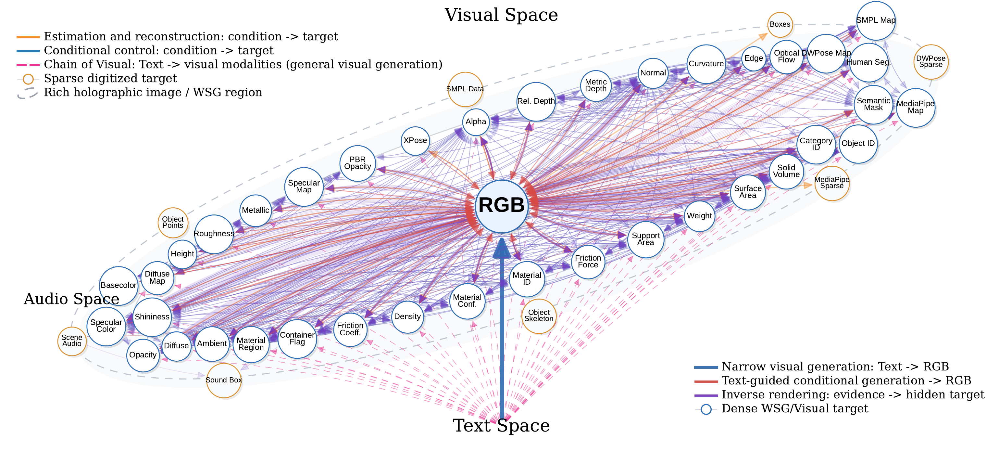

Abstract
In this paper, we propose a Unified Law for Visual Tasks, which can be further divided into the Four Laws of Computer Vision, with the goal of enabling a single framework or method to uniformly train on and perform nearly all visual tasks. Our starting point is an inspiration and hypothesis: if world information is encoded into images, which we call World Snapshots, then image processing is world processing, and image generation is World Snapshot generation. Furthermore, if all visual and visualization tasks can be reformulated as generation tasks, then developing one model, referred to as a World Snapshot Model, would allow us to perform the vast majority of visual tasks, much as large language models have largely unified natural language processing. This work summarizes and validates these laws across more than 1,000 visual tasks (defined by distinct input-output mappings) and proposes a unified training framework for guiding future research and applications in visual tasks.
Insights and Summary
In this article, we attempt to address the real challenges currently faced by Computer Vision:
Method: The Tree of Computer Vision
World Snapshot Graphics (.wsg) represents RGB and auxiliary world attributes in one 256-channel image-like format. TunnelingNet preserves a shared generative backbone while learning a compact, independently trainable path for each visual task.

Representative Qualitative
Matrices & Metrics

Ablations & Scaling

Experiment
Beginning with the initial WSG idea in 2024, the next two years of development covered 60 experimental families and 198 named variants. Across this process, we accumulated at least 2,293 training attempts documented in surviving records. Complete configurations remain for 1,546 different training runs, and weights remain for at least 1,380 trained models. Once this evidence converged, we formally stated the Unified Law and developed the complete framework: WSG organizes RGB and additional world information, WSM installs the resulting visual capabilities around a shared generative backbone, and TunnelingNet redirects that backbone toward each requested target at low marginal cost. Using this final framework, we trained and evaluated 1,148 visual tasks across 39 output groups and all four interfaces. The development process explains how the law and mechanism were discovered, while the final evaluation tests how broadly the resulting method works.
For example, on three parameter-matched structured visual tasks, TunnelingNet produces clean, recognizable outputs in 27–47 minutes and reveals the first recognizable structure 77–100× earlier than LoRA with native joint attention. Some individual task tunnels already achieve competitive results after only roughly two to three hours of training. In external evaluations, the same unified WSM surpasses VGGT and ControlNet, two Best Paper Award methods, as well as Marigold, a Best Paper Award Candidate, on the reported metrics in their respective comparisons.
Paper Conclusion
We presented the Unified Law for Visual Tasks, which expresses visual tasks as transformations among image-like World Snapshots. World Snapshot Graphics encodes RGB and auxiliary attributes in a 256-channel representation. Four practical interfaces instantiate the high-level task forms through estimation/reconstruction, narrow visual generation, additional-channel conditional control, and RGB-assisted inverse rendering. We validate the method and the law across 1,148 visual tasks. Among the tasks recorded by Papers with Code, 1,477 are visual or vision-related tasks, broadly representing the vast established field of Computer Vision. All 1,477 tasks are compatible with the WSM interfaces and can be expressed by the same system. After half a century of development, we bring the vast field of Computer Vision into a unified generative framework. WSM creates an estimated 655–1,056 entirely new visual tasks and expands Computer Vision by 44.3–71.5%. Every evaluated task is accompanied by a trained baseline. WSM therefore consolidates the historical field while opening a substantially larger visual-task space.